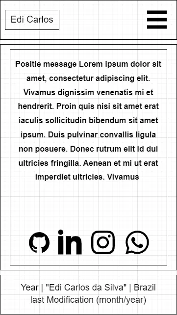
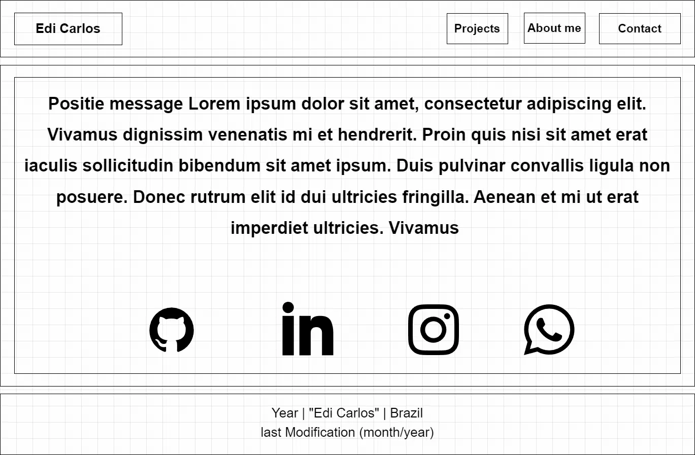

Site Name
edicarlosihs
This website name is my username on github.
Domain availability: I will use the edicarlosihs.github.io that actually is my portfolio with React framework.
Site Purpose
The purpose of this portfolio is to show the projects I have been doing. The idea is to show my knowledge in HTML, CSS and javascript.
Scenarios
- what tecnologies/languages the projects were done.
- How to filter projects by tecnlogies.
Color Schema
Very Dark Indigo - #0f0e17
Used for header, footer, section
Off-White - #fffffe
Used for text color
Coral Red - #f25f4c
Used for highlights, border
Typography
Roboto - Used in the whole website.
Wireframe
Mobile View

Desktop View
